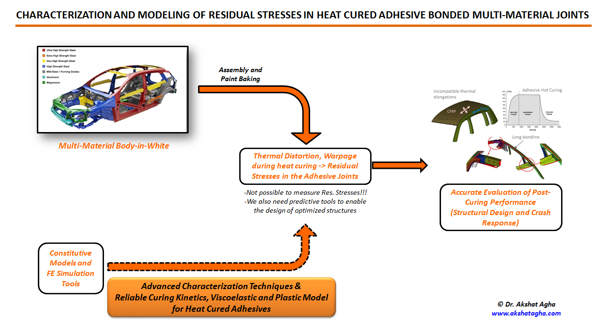

Automotive-grade structural adhesives are heat-cured epoxy-based thermosets. The heat curing process poses a critical problem pertaining to the differences in the coefficient of thermal expansion (CTE) of the joined materials; the mismatch of which has significant implications on the integrity and response of the BIW to external loading (mainly thermal).
One of the main challenges in the joining of multi-material components is the assessment of the nature and magnitude of the residual stresses developing in the adhesive bond during the heat curing manufacturing process. Numerical modeling of these residual stresses can provide insights for making informed decisions related to (i) material substrate properties; (ii) adhesive properties i.e. low, medium, or high stiffness; (iii) bondline geometry i.e. bondline width and bead thickness; (iv) curing cycle characteristics; and (v) fixation design i.e. type, spacing, the number of joints and much more.
There is a need for reliable experimental techqniques and robust mathematical models to comprehensively capture the effects of CTE mismatch in adhesive bonded joints.
This work presents a suite of characterization methods and a cure history-dependent viscoelastic-plastic material description for the modeling of adhesive bonded joints. The main highlight of the work is the multi-physics modeling package consisting of a curing kinetics model, a cure-dependent viscoelastic model, and a temperature, strain-rate dependent plastic model formulation which can be coded in any finite element solver. The modeling approach can predict the residual stresses in the adhesive bond due to the accumulated viscoelastic as well as plastic strains occurring during the heat curing process. This study was performed at Clemson University (CU-ICAR) and was sponsored by Henkel Corporation North America.
The research task was divided into three groups of activities, published in the International Journal of Adhesion and Adhesives in a series of research articles and my Doctoral Dissertation at Clemson University.
Experimental Methods to capture the effect of CTE mismatch in the material substrates on the adhesive bonded joints
Development and calibration of cure-history dependent viscoelastic-plastic material description for adhesives
Development of a UMAT in LS-DYNA for the adhesive and its experimental validation at coupon level and component level.
Article Highlights
Article Highlights
Article Highlights
Copyright © Akshat Agha